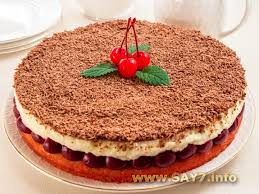

Вишневый пирог «Наслаждение»
Вкуснейший пирог! Удачное сочетание нежного-нежного крема, кисленькой вишни и пышного бисквита. Вместо вишневого компота можно использовать замороженную вишню. Ее надо разморозить, дать соку стечь, и этим соком пропитать бисквит.
Ингридиенты:

тесто:
3 яйца
150 г сахара
150 г муки
крем:
250 г сливок 33–35%
250 г сыра маскарпоне
150 г сахара
также:
компот из вишни или черешни
100 г шоколада
Приготовление
Яйца взбить с сахаром (взбивать в течение 5–7 минут).
Добавить муку, замесить не густое тесто.
Тесто выложить в смазанную маслом форму (у меня форма диаметром 26 см).
Поставить в разогретую до 180 градусов духовку.
Выпекать в течение 20–25 минут.
Выпеченный корж немного пропитать вишневым компотом.
Выложить на корж вишню (косточки удалить).
Приготовить крем.
Для этого сливки взбить с сахаром.
Добавить маскарпоне, перемешать.
Выложить крем на вишню.
Шоколад натереть на мелкой терке.
Посыпать пирог шоколадом.
Поставить в холодильник на 3–4 часа.